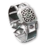
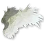
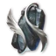
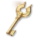
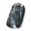
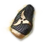
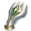
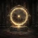
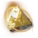

Após o nível 45
A ordem de evolução dos equipamentos, do nível 45 até a raid do dragão para 10 jogadores. Os números indicam o nível de item.
Baseado na rota global de Aragon para 2.500 itens (10 de outubro) e guia de progressão de SywoGG, a mecânica de atualização vem da folha de progressão do TitanTheF. Bloqueia de um link de vídeo para o momento deles. AragonSanya JacuzziSywoGGTitanTheFAragon
- Os marcos do nível do item
- 45História, missões regionais e seu mapa
- 1400Para 1,400Shugo, Nightmare, Draupnir
- 1900A 1.900, Vakron e Urugugu.
- 2100Para 2.100: ★2 Transcendência e um cartão de artesanato
- 2500Para 2,500: Ferocious Horn Den
- 2800Para 2,800: arco de ouro e o ataque
- Rota Hardcore: melhorar um branco bamouse, em seguida, transferir
- Como as mudanças funcionam.
- Soulbind: atributos para cada espaço de equipamento
- Pets e Genus Insight
- Títulos: o que equipar
- Dicas para todos.
Os marcos do nível do item
A rota de Aragão no global: 2.500 itens em dois reinícios semanais com a adesão e P2W zero - livre para jogar, espere quatro a cinco reinícios.
| Nível de item | O que ele abre | Como você chega lá? |
|---|---|---|
| 1,000 | A última história principal é o Abismo, um guarda lendário. | Buscas regionais e masmorras seladas depois de 45 |
| 1,400 | Ilha do Céu de Vakron, Canyon de Urugugu | Penas de abismo, todas as missões regionais e calabouços selados, Pesadelo, Shugo Festival |
| 1,900 | ★2 Transcedência | O conjunto Vakron, acessórios Urugugu, aprimoramento |
| 2,100 | Horn Den Feroz, Templo de Fogo | Arcana verde de ★2 Transcedência, um cartão lendário criado |
| 2,500 | ★4 Transcendência | Armadura Horn Den, arma e acessórios do Templo de Fogo, uma corrida ★3 |
| 2,800 | O ataque de Ludra. | Ouro arcana, aprimoramento passado +15 |
- Pule as masmorras de nível 1. O mapa e o conteúdo lateral levam você para passar por eles, então sua energia vai para Vakron e as masmorras depois disso. ▶ 7:31
- Nunca se dissolvem equipamentos lendários. Extraia tudo o resto para melhorar pedras, mas mantenha cada peça lendária para a alma ligar rerolls e transferência.
História, missões regionais e seu mapa
Milestones. Você chega ao nível 45 com cerca de 700 de nível de item. A etapa final da história, no Abyss, exige aproximadamente 1.000. Se não conseguir entrar, faça as etapas abaixo e volte: cristais Daevanion, clash runes, cinto e amuleto, e Exploration: Draupnir. SywoGG 0:46
- Termine a história principal primeiro. Ele dá uma arma de ouro para sua classe,

Pulseira da Ascensão e
Ultimate Daeva Wings (equipado: HP 500, MP 250, penetração 500, ataque crítico 35; propriedade: penetração 100, precisão + 20, ataque + 10). Sanya Jacuzzi 1:27 - Buscas Regionais (Journal → Regional): dois anéis, dois brincos e um colar (azul), mais duas runas PvE. Eles também dão títulos e peitos de Theostone.
- Melhore um pouco, configure sua macro PvE e limpo a cada um em seu próprio mapa: cada masmorra selada dá
 Cristal Daevanion × 2 e 2 pontos de habilidade, cada fortaleza
Cristal Daevanion × 2 e 2 pontos de habilidade, cada fortaleza  Noble Belt Enhance Scroll ×2.
Noble Belt Enhance Scroll ×2. - Então as missões regionais restantes e as penas pelo menos 95
 Traço empíreo: levam o Monolito para o nível 11, que atualiza o amuleto de verde para azul.
Traço empíreo: levam o Monolito para o nível 11, que atualiza o amuleto de verde para azul.
- Penas de abismo: Recolha todos os 200. Traço empíreo: no Abismo (cerca de uma hora e meia) e entregá-los no Monolito - nível 16 traz pontos de Daevanion, 36 deles para a placa PvP. ▶ 2:24
- O fim da história se abre Novas missões regionais... voltar para a melhor armadura e acessórios, e terminar cada masmorra selada - cada um dá cristais de Daevanion e pontos de habilidade.
- Não tem certeza para onde os pontos de Daevanion vão? Os cantos primeiro, depois os nós de habilidade azul.
- Clash runas (
 Clash Rune Chest): 60 nível de item cada, então o par é + 120. Eles vêm de missões verdes ao redor do mapa, ou comprá-los na loja Nightmare (Crescer tab) com a moeda da primeira liberação. Não os melhore além do 1 a menos que tenha um sobressalente. SywoGG 2:32
Clash Rune Chest): 60 nível de item cada, então o par é + 120. Eles vêm de missões verdes ao redor do mapa, ou comprá-los na loja Nightmare (Crescer tab) com a moeda da primeira liberação. Não os melhore além do 1 a menos que tenha um sobressalente. SywoGG 2:32 - A pulseira da história (Pulseira da Ascensão) fica com você por meses: levá-lo para + 10 - 11 - acrescenta ataque e defesa também - e colocar o seu um

Superior Manastone nele: dois rolos de ouro dar o nível mais item. O segundo bracelete vem de uma busca da sua própria facção (nível 43).
Para 1,400Shugo, Nightmare, Draupnir
1.400 abre as masmorras de nível 2. Aragão chega lá com as penas do Abismo, cada busca regional e calabouço selado, Pesadelo e o Shugo Festival - os passos abaixo.
Shugo Festival e chefe fendas
Mini-jogos com um cartão de recompensa no final. Sua casa decide quantas cartas você abre. Se você se colocou mal você pode pular a recompensa - o 
O festival corre. a cada hora. Qualquer mini-jogo conta, escolha o que você é melhor e sempre jogue esse, mirando no 1o ou 2o lugar. A cada meia hora incursão. O chefe aparece: dano de transação por contribuição e abrir todos os cartões quando você reivindicar - eles podem segurar mais moeda Shugo. ▶ 3:50
| Lugar | Cartas |
|---|---|
| 1º | 4 |
| 2ND, 3rd | 3 |
| 4 th e mais baixo | 2 |
Chefe, as fendas. (por exemplo. Beritra Air Raid: segure as ondas, e depois mate o mini-chefe. 100 pontos de contribuição = 3 cartões, as mesmas recompensas que Shugo. Convide Chanters, Clerics e Templários bem no portal. Seus fãs da festa facilitam o 100. Sanya Jacuzzi 5:54
O prêmio principal é moeda Shugo: gastar tudo isso em  Cristal Daevanion na Festival Shop, por personagem. O preço aumenta por faixas: 50 (×10), 100 (×10), 200 (×15) e 400 (×15).
Cristal Daevanion na Festival Shop, por personagem. O preço aumenta por faixas: 50 (×10), 100 (×10), 200 (×15) e 400 (×15).  Centuryroot Token × 10,500 no total. Sanya Jacuzzi 6:36
Centuryroot Token × 10,500 no total. Sanya Jacuzzi 6:36
Pesadelo.
- Masmorra de chefe solitário. A base 14 tenta reabastecer por conta própria (+ 2 por dia), mais uma segunda piscina de até 30 que você enche com ingressos; cargas começam a acumular-se no nível 45 - chegar até ele antes da primeira reinicialização. Sanya Jacuzzi 7:06
- Todo chefe tem níveis de desafio 10, matar cada um em todos eles. Uma tentativa é gasta apenas em uma morte, então saia e volte mais forte. Cinzas primeiro, depois verdes, depois o último chefe.
- O primeiro limpinho dá
 Fragmento Fantasma × 500, repete 100. Loja, guia de crescimento: Cristal Daevanion para 300 (50 por personagem),
Fragmento Fantasma × 500, repete 100. Loja, guia de crescimento: Cristal Daevanion para 300 (50 por personagem),  Stigma Shard para 1,500 (35), Clash Rune Chest para 500. Fique com o 14,000 para a estátua.
Stigma Shard para 1,500 (35), Clash Rune Chest para 500. Fique com o 14,000 para a estátua.
Expedição: Conquista - Draupnir
- Passe para a garantia : 14 peito abre (7 com prêmio), 40 Odyle energia cada. O objetivo são duas peças de ouro de gotas e um terço da garantia - você escolhe qual peça Bakarma (
 Bakarma peitoral, leme, pauldrons, luvas, torresmos, botas). Sanya Jacuzzi 7:45
Bakarma peitoral, leme, pauldrons, luvas, torresmos, botas). Sanya Jacuzzi 7:45 - Recolha todos os Traço empíreo: em Caótica Baixa Reshanta: os níveis de ressonância Monolítica dão cristais Daevanion, como
 Azphel.
Azphel. - Ainda é curto? Três corridas de Exploração : Draupnir garante outra peça de ouro - pegue qualquer que você não tem e coloque um
 Intermediário Manastone nela.
Intermediário Manastone nela.
Melhoramento em 1,400
| Espaço | Nível | Manastone |
|---|---|---|
| Arma de ouro e pulseiras. | +10 | Superior Manastone ×1 |
| Armadura de ouro de Draupnir | +10 | |
| Armadura azul, brincos, colar, anéis | +5 |  Menos Manastone |
| Cinto, amuleto. | +3 | — |
Além de uma Theostone verde na arma (por exemplo 
- Menos de 1.400? Melhorar: o equipamento azul para +10 é barato, para +5 muito mais barato ainda, e a maioria das pedras voltam quando você dissolve a peça mais tarde. ▶ 4:46
- Os braceletes da história.Pulseira da Ascensão) pode ir ao máximo - não é desperdiçado.
- Menos Manastone Em cada peça: dois rolos verdes dão o nível mais item. Superior Manastone de realizações pode rolar linhas de ouro.
Cinto, amuleto e energia Odyle
- Cinto e amuleto: verde → azul na substância Morph, em seguida, até o ouro (unequip-los primeiro) — um grande salto no nível de item; não passar do ouro, ele fica caro. Strongholds e o Monolith dão o material de atualização. SywoGG 6:24
- Gastar energia Odyle com cuidado: depois de cada nova peça melhorá-lo, adicionar manastones, verificar o seu nível de item, e só então decidir para onde ir a seguir - outra corrida da mesma masmorra ou algo que você ainda não fez.
A 1.900, Vakron e Urugugu.
- Ilha do Céu de Vakron (tier 2, Conquest) até conseguir a maior parte do conjunto de armadura: é a melhor chance de obter equipamento útil. A recompensa garantida chega após abrir 21 baús: 11 tentativas com assinatura, que permite abrir o baú final duas vezes. ▶ 7:31
- Ingressos de pena vão para Substância Morph: um baú escolhido para a peça de armadura que você ainda perde, ou dois bilhetes para

Guarda Vakron.. Executar a Exploração uma vez primeiro - abrindo seu peito final três vezes dá uma recompensa de piedade única, reivindicá-lo apenas após Conquista, quando você sabe qual peça está faltando. - Cânion de Urugugu Para os acessórios, Aragão precisava de 13 corridas. Não faça isso para a arma, a chance é baixa e a maioria das armas lá pertencem a outras classes. Uma arma caída mais dois ingressos depois, faz um baú de escolha.
- Ainda é curto? Leve equipamento lendário para +11 (pouco menos de 1 milhão de kina uma peça; +5 é cerca de 130.000) e adicione manastones em vez de queimar energia em mais corridas.
- Nenhuma sorte com gotas? Algumas corridas de ★1 Transcedência (de 1.600) para arcona cinza: 20 item nível por cartão, até +100 para as cinco fendas - muitas vezes mais rápido do que cultivar as últimas peças de ouro.
Para 2.100: ★2 Transcendência e um cartão de artesanato
A 1.900 vai direto para ★2 Transcedência - Quebrado Arkanis e Deus Base de Pesquisa. É um pico de dificuldade: temporizadores de raiva apertados e meia hora por corrida. O objetivo é um conjunto verde completo, 5 × 40 = +200 nível de item, de 1.900 a 2.100. ▶ 11:31
- A transcendência começa no 1,600. Cinco caça-níqueis arcana: um cartão cinza dá nível de item 20, 40 verde, 60 azul. Um conjunto verde completo é + 200 (1,600 → 1,800 ), trocá-lo por azul é outro + 100. SywoGG 8:46
| Dungeon. | Arcana, ele cai. |
|---|---|
| Base de Pesquisa de Deus. | Cálice, Bússola, Bell |
| Arkanis despedaçados | Cálice, Pergaminho, Espelho |
Um cartão lendário criado.
- Arcana → Transmute cria um cartão lendário de cinco Cristal misteriosoCom a habilidade que você escolhe. ▶ 20:20
- Um cristal: extraia os cartões de reserva que você coletou no caminho (Arcana → Extrair) até que o bar esteja cheio.
- Um: a loja da temporada, por 25.000 moedas da temporada das missões da temporada.
- Três: o julgamento da Ascensão recompensa em 1.000, 3.000 e 4.000 - 4.000 precisa de modo rígido em cerca de 2.000 item nível.
Para 2,500: Ferocious Horn Den
Vá direto para Horn Den Feroz (a comunidade da RU chama de "o cão") e fique até que você tenha a maioria de suas armaduras. Mova seu aprimoramento Vakron para as novas peças com a transferência de engrenagens. Sanya Jacuzzi 10:18
O Templo de Fogo, a outra masmorra desta camada, larga a arma e os acessórios. SywoGG 11:16
- Em Ferocious Horn Den, abra o baú da Exploração três vezes pelos bilhetes de pena, mas não pegue a armadura ainda - espere até que apenas uma peça esteja faltando, então use os bilhetes (ou troque-os pelo guarda). ▶ 16:43
- Então o Templo de Fogo pela arma e os acessórios, os mesmos ingressos preenchem o que não cai.
- Uma corrida de ★3 Arkanis estilhaçados por cartões azuis foi o que empurrou Aragão mais de 2.500.
- Para a arma e o guarda, o mercador da Nuvem Negra vende regularmente Theostones - um verde é cerca de +3 item nível.
- Transferência (mantém o realce e a alma se liga) só quando a alma se liga é boa: velocidade de combate nas luvas e no colar, velocidade de movimento nos brincos, dano aumenta no baú, danos críticos aumentam nos ombros.
Para 2,800: arco de ouro e o ataque
Arcona de ouro fazenda em ★ 4 Transcendência e rolar as habilidades que você precisa para suas configurações PvE e PvP (por exemplo 
A partir daqui + 10 - 11 não é suficiente: o equipamento passa + 15 para + 20, e acima + 15 que precisa de  Amplifique a Pedra (Unique). Não leve todo o equipamento do calabouço para + 20 - artes artesanais (nível de itens 94 e 102 contra 86 de gotas) é o que vale + 20 e manastones bem ajustados. SywoGG 11:32
Amplifique a Pedra (Unique). Não leve todo o equipamento do calabouço para + 20 - artes artesanais (nível de itens 94 e 102 contra 86 de gotas) é o que vale + 20 e manastones bem ajustados. SywoGG 11:32
Aponte para 2.800 até o final do primeiro mês - que abre o Ludra. Invasão com novos acessórios. Energia decide o quão rápido você chega lá: Odyle Energy na Substância Morph, e com a associação comprar energia do mercador Wind Breeze toda semana. ▶ 22:40
Rota Hardcore: melhorar um branco bamouse, em seguida, transferir
Os mesmos passos de cima, mas guardando cada pedra e kina: melhorar um branco barato e mover o resultado para o equipamento que você mantém.
- O custo de aprimoramento aumenta com o nível do item (Vakron Cloak, 76: 380 pedras e 9,500 kina por tentativa; Abyssal Bracelet, 84: 420 e 10,500). Depois de +10, a chance cai (+13 → +14: 25%, +5% após cada falha), e uma tentativa no topo custa cerca de 2 milhões de kina. Sanya Jacuzzi 11:48
- Uma pedra de transferência (Arma (Unique),
 Armadura (Unique)) move o nível de realce e rola estatísticas para qualquer item - mesmo da peça de ouro mais barata para a melhor. Feito em Substância Morph de equipamento de ouro.
Armadura (Unique)) move o nível de realce e rola estatísticas para qualquer item - mesmo da peça de ouro mais barata para a melhor. Feito em Substância Morph de equipamento de ouro. - Plano: use o equipamento de ouro mais baixo, não aumente novas gotas. Quando uma atualização de longo prazo cair, pegue um espaço bamouse para a slot + 15 e transfira. Trabalha para armas, armaduras e guardas, não acessórios (sem fontes baratas).
- É lento sem alts: 3 – 4 extra personagens trazer as pedras de realce adicionais.
Como as mudanças funcionam.
Fonte: TitanTheF
As cinco abas de reforço em resumo: "Enhance", Manastone, Theostone, Soul Binding and Transfer".
| Classe de engrenagem. | Melhoramento máximo. |
|---|---|
| Azul | +15 |
| Ouro | +20 |
| Laranja | +25 |
- Melhorar. Equipamento de ouro tem uma chance 100% até + 10, depois disso ele cai. Uma falha nunca quebra o item - apenas os materiais e kina são gastos. Acima de + 15 você também precisa de
 Amplifique a Pedra (Unique), feito em substância Morph de Amplifique o Fragmento de Pedra (Unique) e
Amplifique a Pedra (Unique), feito em substância Morph de Amplifique o Fragmento de Pedra (Unique) e 
Melhorar a Pedra. - Manastones. O número de slots depende da raridade: 1 branco, 2 verde e assim por diante. Existem dois tipos, para armas e armaduras, e para acessórios, cada um em uma versão normal e PvP (Superior Manastone).
- Theostones. vão para a arma e o guarda: danos, dano contínuo ou controle. Eles disparam com uma chance de ataque. Quanto maior a sua velocidade de combate, mais frequentemente (A Dexteridade de Jumentis).
- A alma que liga. Tab 1 aumenta a qualidade das estatísticas, tab 2 rerolls - com qualquer equipamento de ouro desnecessário ou itens de reroll - tab 3 usa livros.
 Sync Stone (Unique) vem do passe de batalha, masmorras duras e masmorras do 2,800.
Sync Stone (Unique) vem do passe de batalha, masmorras duras e masmorras do 2,800. - Transferência move realce e estatísticas para outro item - ver a rota hardcore acima.
- Títulos cada um dá estatísticas passivas, a informação do título mostra como obter um.
- A temporada dura 2 – 3 meses. Pontos da temporada compram materiais de fabricação na loja da temporada.
Soulbind: atributos para cada espaço de equipamento
Fonte: Aragon
Refazer os atributos de Soulbind do equipamento consome outras peças lendárias — os itens que caem ao farmar monstros e pets.
- Na janela de Soulbind, escolha Sync, uma peça lendária para consumir e a linha de atributo desejada. A janela mostra a chance desse atributo; Sync consome a peça. ▶ Aragon 3:19
- Attack, Might e Precision já entram em todas as peças — a tabela lista as outras linhas de maior impacto.
| Espaço | Atributos |
|---|---|
| Arma e guard | Combat Speed, Weapon Damage Boost, Damage Boost |
| Cabeça | Double Chance, Attack Increase |
| Ombros | Critical Damage Boost, Double Chance |
| Peito | Damage Boost, Perfect Chance |
| Pernas | Attack Increase, Perfect Chance, Damage Tolerance |
| Braços | Combat Speed, Perfect Chance |
| Pés | Move Speed, Perfect Chance |
| Capa | Double Chance, Attack Increase |
| Brincos | Move Speed |
| Colar | Combat Speed |
| Anéis | Habilidades |
Pets e Genus Insight
Pets, Genus Insight e as linhas para buscar agora têm uma página própria: Pets e Genus Insight.
Títulos: o que equipar
Três slots: ataque, defesa e outros, e apenas o título equipado dá as estatísticas abaixo. Cada título seu também adiciona um pequeno bônus permanente, então o resto vale a pena colecionar também. Nomes como no jogo; Elyos / Asmodian onde eles diferem.
Attack
Unbound by Genus
Critical Hit +68Attack +34PvE Damage Boost +4.5%
Mestre Genus Insight.
O melhor título de ataque da PVE, mas um longo gol.
Guardião de Verteron. / Guardião de Altgard.
Penetração da Defesa +210PvE Damage Boost +3%
Alcance o nível 20 de [Verteron Monolith] / alcance o nível 20 de [Altgard Monolith]
O que usar primeiro: levantar o Monolito de sua região, encontrando vestígios de Empiréia.
Traindo as asas negras / Traindo as asas brancas
PvP Accuracy +80PvP Attack +40PvP Damage Boost +4%
Juntei aqueles com a marca vermelha.
Para PvP.
Defense
Santo de Verteron. / Santo de Altgard.
Bloquear +100Defense +300Damage Tolerance +3%
Alcance o nível 30 de [Verteron Monolith] / alcance o nível 30 de [Altgard Monolith]
A escolha de sempre, o mesmo Monolito, todos os vestígios encontrados.
Dominador das Dimensões
Max HP +1,000Defense +340Damage Tolerance da TVP +4.5%
Obtido 25 Asas.
Tanques e qualquer um que morra com chefes.
Governar toda a criação
Defense +320Damage Tolerance ao ataque de volta +3%Chefe Danos Tolerância +4%
Coletou 200 tipos de animais de estimação.
Uma opção de longo prazo com tolerância a danos no chefe.
Outro
Através do Inferno e de volta
Max HP +900Esforço +225Cooldown Reduction +3%
Dungeon selado limpo:
Fácil e bom: uma masmorra selada em sua região natal.
Armário Vazio
HP Regen. +42Combat Speed +3.5%Cooldown Reduction +3.5%
Obtido mais de 700 Skins, mas ainda não é suficiente.
A melhor, mas 700 peles levam meses.
Dicas para todos.
Contmouses diários (Journal → Duty → Missão) reiniciam todos os dias. Apenas a primeira recompensa aleatória é garantida, os outros são uma chance que cai ao longo da lista - 100%, 50%, 33%, 25%, 10%. Sanya Jacuzzi 14:18
- Pegue todos os contmouses com a chave dourada Chave dourada. em slots 1 - 4.
- Sem chave: falta de pedras de realce, a que tem mais pedras, caso contrário, a que tem mais arco-íris e outras pedras de estimação.
- Um item ou recurso dourado no final da lista é quase sempre uma armadilha - pule esses.
Cubos ocultos dão cristais 1,000 cada - pegue cada um que você passar. Kina não ligada. é para comprar materiais, não para melhorar. TitanTheF
Daily Dungeon e os testes: não os toquem e não abram suas caixas de passe se forem entregues no lançamento. Eles estão sendo retrabalhados, recompensas dependem da sua pontuação (velocidade de morte), e eles se refrescar apenas no final da semana - vá então, em seu mais forte. O mundo semanal e as recompensas de Abyss também estão sendo retrabalhadas. Espere pelos números ao vivo. Sanya Jacuzzi 15:21
De onde mais vem o poder de combate?
- Estigmas e seus níveis, o maior salto individual. SywoGG 13:20
- Liga de Almas: rerole as estatísticas de sua arma, guarda e acessórios para melhores (por exemplo, Ataque Crítico → Velocidade de Ataque).
- Itens ofensivos passados + 15 - cada passo adiciona Ataque %.
- Títulos, decorações Pantheon (Ilusão e Sabedoria têm as melhores estatísticas) e asas - Vakron ou Nightmare asas são grandes.
- Rebobinando as estatísticas do ramo Pet/Genus Insight, e afinando as pedras e as pedras da alma para estatísticas ofensivas.
- Peles de armas: desmontá-las em alts e usar combinar em seu principal - cada arma que você desbloquear adiciona danos com esse tipo de arma.